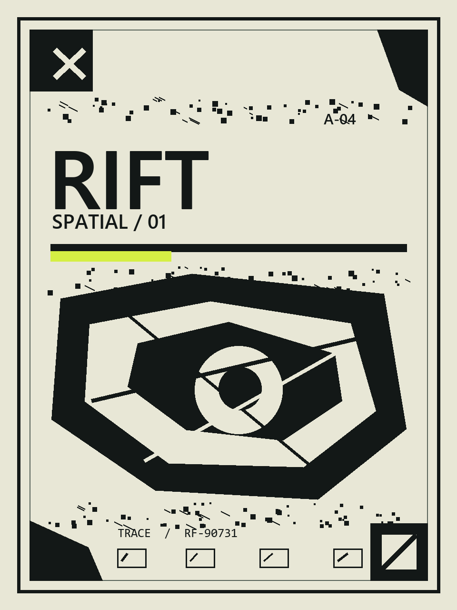

Ce se ascunde
în ecran.
Imaginea de pe laptop ancorează un artefact 3D. Deschide carcasa, rotește mecanismul și activează cele trei puncte pe iPhone.
- 01Deschide linkul pe iPhone în Safari.
- 02Permite camera din spate și încadrează imaginea întreagă.
- 03Atinge nucleul, glisează peste el și aprinde cele trei puncte.
SESIUNE ······Se pregătește conexiunea…
Trimite linkul pe iPhone. Conexiunea funcționează și fără server local.
Tehnologie și credite ↗RIFT / IMAGE TARGET

ȚINTĂ STATICĂ / 960 × 1280SCAN 01
AȘTEPTARE
0 / 3